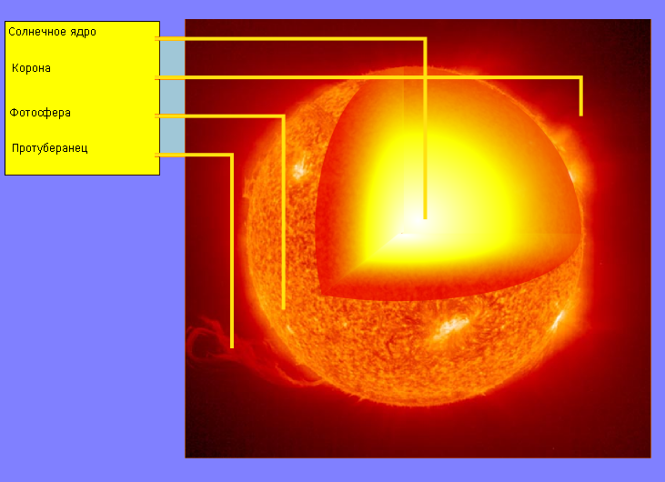

Солнце (астр.) — одна из звёзд нашей Галактики (Млечный Путь) и единственная звезда Солнечной системы. Вокруг Солнца обращаются другие объекты этой системы: планеты и их спутники, карликовые планеты и их спутники, астероиды, метеороиды, кометы и космическая пыль.
По спектральной классификации Солнце относится к типу G2V (жёлтый карлик). Средняя плотность Солнца составляет 1,4 г/см³ (в 1,4 раза больше, чем у воды). Эффективная температура поверхности Солнца — 5780 кельвин. Поэтому Солнце светит почти белым светом, но прямой свет Солнца у поверхности нашей планеты приобретает некоторый жёлтый оттенок из-за более сильного рассеяния и поглощения коротковолновой части спектра атмосферой Земли (при ясном небе, вместе с голубым рассеянным светом от неба, солнечный свет вновь даёт белое освещение).
Солнечное излучение поддерживает жизнь на Земле (свет необходим для начальных стадий фотосинтеза), определяет климат.
Солнце состоит из водорода (≈73 % от массы и ≈92 % от объёма), гелия (≈25 % от массы и ≈7 % от объёма) и других элементов с меньшей концентрацией: железа, никеля, кислорода, азота, кремния, серы, магния, углерода, неона, кальция и хрома. На 1 млн атомов водорода приходится 98 000 атомов гелия, 851 атом кислорода, 398 атомов углерода, 123 атома неона, 100 атомов азота, 47 атомов железа, 38 атомов магния, 35 атомов кремния, 16 атомов серы, 4 атома аргона, 3 атома алюминия, по 2 атома никеля, натрия и кальция, а также малое количество прочих элементов. Масса Солнца составляет 99,866 % от суммарной массы всей Солнечной системы.
Солнечный спектр содержит линии ионизированных и нейтральных металлов, а также водорода и гелия. В нашей Галактике (Млечный Путь) насчитывается от 100 до 400 миллиардов звёзд. При этом 85 % звёзд нашей галактики — это звёзды, менее яркие, чем Солнце (в большинстве своём красные карлики). Как и все звёзды главной последовательности, Солнце вырабатывает энергию путём термоядерного синтеза. В случае Солнца подавляющая часть энергии вырабатывается при синтезе гелия из водорода.
Солнце — ближайшая к Земле звезда. Средняя удалённость Солнца от Земли — 149,6 млн км — приблизительно равна астрономической единице, а видимый угловой диаметр при наблюдении с Земли, как и у Луны, — чуть больше полградуса (31—32 минуты). Солнце находится на расстоянии около 26 000 световых лет от центра Млечного Пути и вращается вокруг него, делая один оборот за 225—250 миллионов лет. Орбитальная скорость Солнца равна 217 км/с — таким образом, оно проходит один световой год за 1400 земных лет, а одну астрономическую единицу — за 8 земных суток.
В настоящее время Солнце находится во внутреннем крае рукава Ориона нашей Галактики, между рукавом Персея и рукавом Стрельца, в так называемом Местном межзвёздном облаке — области повышенной плотности, расположенной, в свою очередь, в имеющем меньшую плотность Местном пузыре — зоне рассеянного высокотемпературного межзвёздного газа. Из звёзд, принадлежащих 50 самым близким звёздным системам в пределах 17 световых лет, известным в настоящее время, Солнце является четвёртой по яркости звездой (его абсолютная звёздная величина +4,83m).
Солнце является молодой звездой третьего поколения (популяции I) с высоким содержанием металлов, то есть, оно образовалось из останков звёзд первого и второго поколений (соответственно популяций III и II).
Текущий возраст Солнца (точнее время его существования на главной последовательности), оценённый с помощью компьютерных моделей звёздной эволюции, равен приблизительно 4,5 миллиарда лет.

Считается, что Солнце сформировалось примерно 4,5 миллиарда лет назад, когда быстрое сжатие под действием сил гравитации облака молекулярного водорода (также, возможно, облака из смеси молекулярного водорода и атомов других химических элементов) привело к образованию в нашей области Галактики звезды первого типа звёздного населения типа T Тельца.
Звезда такой массы, как Солнце, должна существовать на главной последовательности в общей сложности примерно 10 млрд лет. Таким образом, сейчас Солнце находится примерно в середине своего жизненного цикла. На современном этапе в солнечном ядре идут термоядерные реакции превращения водорода в гелий. Каждую секунду в ядре Солнца около 4 миллионов тонн вещества превращается в лучистую энергию, в результате чего генерируется солнечное излучение и поток солнечных нейтрино.
По мере того, как Солнце постепенно расходует запасы своего водородного горючего, оно становится всё горячее, а его светимость медленно, но неуклонно увеличивается. К возрасту 5,6 млрд лет, через 1,1 млрд лет от настоящего времени, наше дневное светило будет ярче на 11 %, чем сейчас.
Уже в этот период, ещё до стадии красного гиганта, возможно исчезновение или кардинальное изменение жизни на Земле из-за повышения температуры поверхности планеты, вызванного увеличением яркости Солнца и парникового эффекта, индуцированного парами воды. К этому моменту Солнце достигнет максимальной поверхностной температуры (5800 К) за всё своё время эволюции в прошлом и будущем вплоть до фазы белого карлика; на следующих стадиях температура фотосферы будет меньше. Несмотря на прекращение жизни в её современном понимании, жизнь на планете может остаться в глубинах морей и океанов.
К возрасту 8 млрд лет (через 3,5 млрд лет от настоящего времени) яркость Солнца возрастёт на 40 %. К тому времени условия на Земле, возможно, будут подобны нынешним условиям на Венере: вода с поверхности планеты исчезнет полностью и улетучится в космос. Скорее всего, это приведёт к окончательному уничтожению всех наземных форм жизни. По мере того как водородное топливо в солнечном ядре будет выгорать, его внешняя оболочка будет расширяться, а ядро — сжиматься и нагреваться.
Когда Солнце достигнет возраста 10,9 млрд лет (6,4 млрд лет от настоящего времени), водород в ядре кончится, а образовавшийся из него гелий, ещё неспособный в этих условиях к термоядерному горению, станет сжиматься и уплотняться ввиду прекращения ранее поддерживавшего его «на весу» потока энергии из центра. Горение водорода будет продолжаться в тонком внешнем слое ядра. На этой стадии радиус Солнца достигнет 1,59 R☉, а светимость будет в 2,21 раза больше современной. В течение следующих 0,7 млрд лет Солнце будет относительно быстро расширяться (до 2,3 R☉), сохраняя почти постоянную светимость, а его температура упадёт с 5500 K до 4900 K. В конце этой фазы, достигнув возраста 11,6 млрд лет (через 7 млрд лет от настоящего времени) Солнце станет субгигантом.
Приблизительно через 7,6-7,8 миллиардов лет, к возрасту 12,2 млрд лет, ядро Солнца разогреется настолько, что запустит процесс горения водорода в окружающей его оболочке. Это повлечёт за собой бурное расширение внешних оболочек светила, таким образом Солнце покинет главную последовательность, на которой оно находилось почти с момента своего рождения, и станет красным гигантом, перейдя на вершину ветви красных гигантов диаграммы Герцшпрунга — Рассела. В этой фазе радиус Солнца увеличится в 256 раз по сравнению с современным. Расширение звезды приведёт к сильному увеличению её светимости (в 2700 раз) и охлаждению поверхности до 2650 К. По-видимому, расширяющиеся внешние слои Солнца в это время достигнут современной орбиты Земли. При этом исследования показывают, что ещё до этого момента из-за усиления солнечного ветра вследствие многократного увеличения площади поверхности Солнце потеряет более 28 % своей массы, и это приведёт к тому, что Земля перейдёт на более далёкую от Солнца орбиту, избежав, таким образом, поглощения внешними слоями солнечной плазмы. Хотя исследования 2008 года показывают, что Земля, скорее всего, будет поглощена Солнцем вследствие замедления вращения Солнца и последующих приливных взаимодействий с его внешней оболочкой, которые приведут к приближению орбиты Земли обратно к Солнцу. Даже если Земля избежит поглощения Солнцем, вся вода на ней перейдёт в газообразное состояние, а её атмосфера будет сорвана сильнейшим солнечным ветром.
Данная фаза существования Солнца продлится около десяти миллионов лет. Когда температура в ядре достигнет 100 млн К, произойдёт гелиевая вспышка, и начнётся термоядерная реакция синтеза углерода и кислорода из гелия. Солнце, получившее новый источник энергии, уменьшится в размере до 9,5 R. Спустя 100—110 млн лет, когда запасы гелия иссякнут, повторится бурное расширение внешних оболочек звезды, и она снова станет красным гигантом. Этот период существования Солнца будет сопровождаться мощными вспышками, временами его светимость будет превышать современный уровень в 5200 раз. Это будет происходить от того, что в термоядерную реакцию будут вступать ранее не затронутые остатки гелия. В таком состоянии Солнце просуществует около 20 млн лет.
Центральная часть Солнца с радиусом примерно 150—175 тыс. км (то есть 20—25 % от радиуса Солнца), в которой идут термоядерные реакции, называется солнечным ядром. Плотность вещества в ядре составляет примерно 150 000 кг/м³ (в 150 раз выше плотности воды и в ~6,6 раз выше плотности самого плотного металла на Земле — осмия), а температура в центре ядра — более 14 млн К. Анализ данных, проведённый миссией SOHO, показал, что в ядре скорость вращения Солнца вокруг своей оси значительно выше, чем на поверхности. В ядре осуществляется протон-протонная термоядерная реакция, в результате которой из четырёх протонов образуется гелий-4. При этом каждую секунду в излучение превращаются 4,26 млн тонн вещества, однако эта величина ничтожна по сравнению с массой Солнца — 2⋅1027 тонн. Мощность, выделяемая различными зонами ядра, зависит от их расстояния до центра Солнца. В самом центре она достигает, согласно теоретическим оценкам, 276,5 Вт/м³. Таким образом, на объём человека (0,05 м³) приходится выделение тепла 285 Ккал/день (1192 кДж/день), что на порядок меньше удельного тепловыделения живого бодрствующего человека. Удельное же тепловыделение всего объёма Солнца ещё на два порядка меньше. Благодаря столь скромному удельному энерговыделению запасов «топлива» (водорода) хватает на несколько миллиардов лет поддержания термоядерной реакции.
Ядро — единственное место на Солнце, в котором энергия и тепло получается от термоядерной реакции, остальная часть звезды нагрета этой энергией. Вся энергия ядра последовательно проходит сквозь слои, вплоть до фотосферы, с которой излучается в виде солнечного света и кинетической энергии.
Над ядром, на расстояниях примерно от 0,2—0,25 до 0,7 радиуса Солнца от его центра, находится зона лучистого переноса. В этой зоне перенос энергии происходит главным образом с помощью излучения и поглощения фотонов. При этом направление каждого конкретного фотона, излучённого слоем плазмы, никак не зависит от того, какие фотоны плазмой поглощались, поэтому он может как проникнуть в следующий слой плазмы в лучистой зоне, так и переместиться назад, в нижние слои. Из-за этого промежуток времени, за который многократно переизлучённый фотон (изначально возникший в ядре) достигает конвективной зоны, может измеряться миллионами лет. В среднем этот срок составляет для Солнца 170 тыс. лет.
Перепад температур в данной зоне составляет от 2 млн К на поверхности до 7 млн К в глубине. При этом в данной зоне отсутствуют макроскопические конвекционные движения, что говорит о том, что адиабатический градиент температуры в ней больше, чем градиент лучевого равновесия. Для сравнения, в красных карликах давление не может препятствовать перемешиванию вещества и зона конвекции начинается сразу от ядра. Плотность вещества в данной зоне колеблется от 0,2 (на поверхности) до 20 (в глубине) г/см³.
Ближе к поверхности Солнца температуры и плотности вещества уже недостаточно для полного переноса энергии путём переизлучения. Возникает вихревое перемешивание плазмы, и перенос энергии к поверхности (фотосфере) совершается преимущественно движениями самого вещества. С одной стороны, вещество фотосферы, охлаждаясь на поверхности, погружается вглубь конвективной зоны. С другой стороны, вещество в нижней части получает излучение из зоны лучевого переноса и поднимается наверх, причём оба процесса идут со значительной скоростью. Такой способ передачи энергии называется конвекцией, а подповерхностный слой Солнца толщиной примерно 200 000 км, где она происходит, — конвективной зоной. По мере приближения к поверхности температура падает в среднем до 5800 К, а плотность газа до менее 1/1000 плотности земного воздуха.
По современным данным, роль конвективной зоны в физике солнечных процессов исключительно велика, так как именно в ней зарождаются разнообразные движения солнечного вещества. Термики в конвективной зоне вызывают на поверхности гранулы (которые по сути являются вершинами термиков) и супергрануляцию. Скорость потоков составляет в среднем 1–2 км/с, а максимальные её значения достигают 6 км/с. Время жизни гранулы составляет 10—15 минут, что сопоставимо по времени с периодом, за который газ может однократно обойти вокруг гранулы. Следовательно, термики в конвективной зоне находятся в условиях, резко отличных от условий, способствующих возникновению ячеек Бенара. Также движения в этой зоне вызывают эффект магнитного динамо и, соответственно, порождают магнитное поле, имеющее сложную структуру.